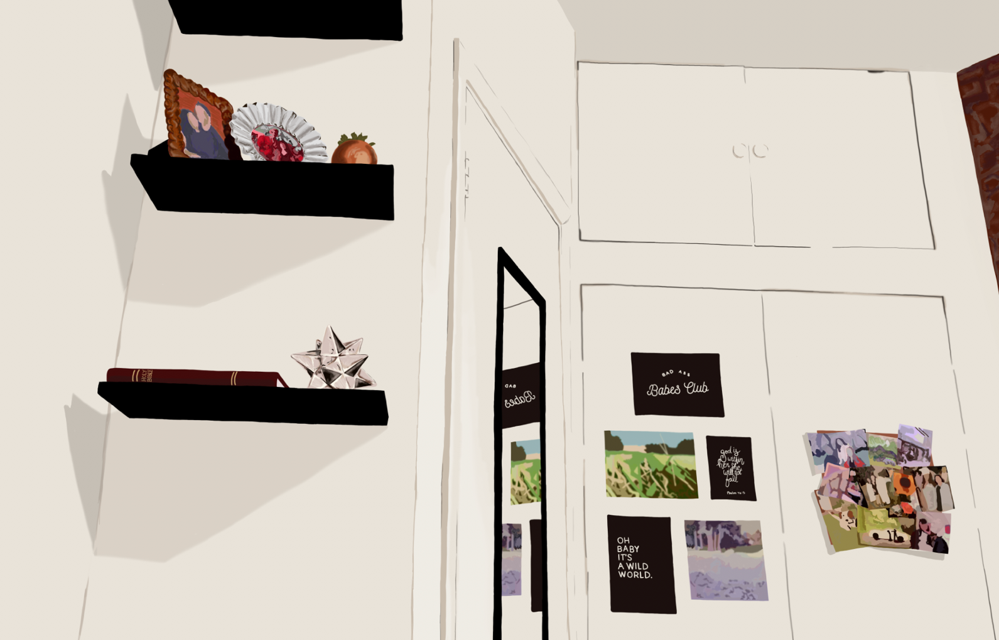
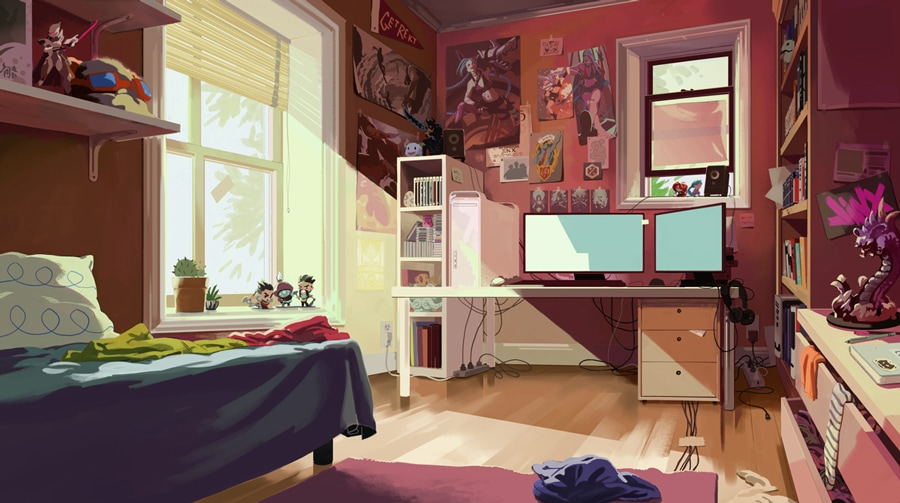
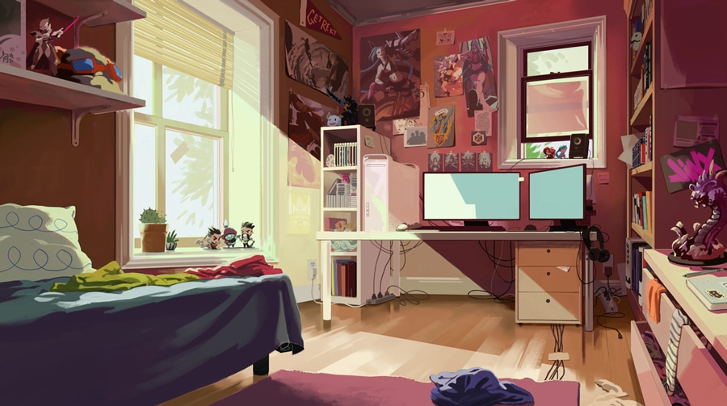

LOADING.................
This piece was a digital painting that I did of my  bedroom using both photoshop and a wacom tablet. I made this piece freshman year for my studio class. The style of the piece was inspired by
Rebecca Mock who has developed a portfolio that is
densely filled with digital imagery and gifs. I find her work to be fascinating, because it is very
detailed and raw in terms of the scenery that she depicts,  however, it looses it's raw 'feeling' through
the use of a digital media. The technological and refined look of it causes the compositions to all feel
'frozen' or even meloncholic. Displayed below are various images ofRebecca Mock'sworks that I used as
inspiration for my piece.
however, it looses it's raw 'feeling' through
the use of a digital media. The technological and refined look of it causes the compositions to all feel
'frozen' or even meloncholic. Displayed below are various images ofRebecca Mock'sworks that I used as
inspiration for my piece.